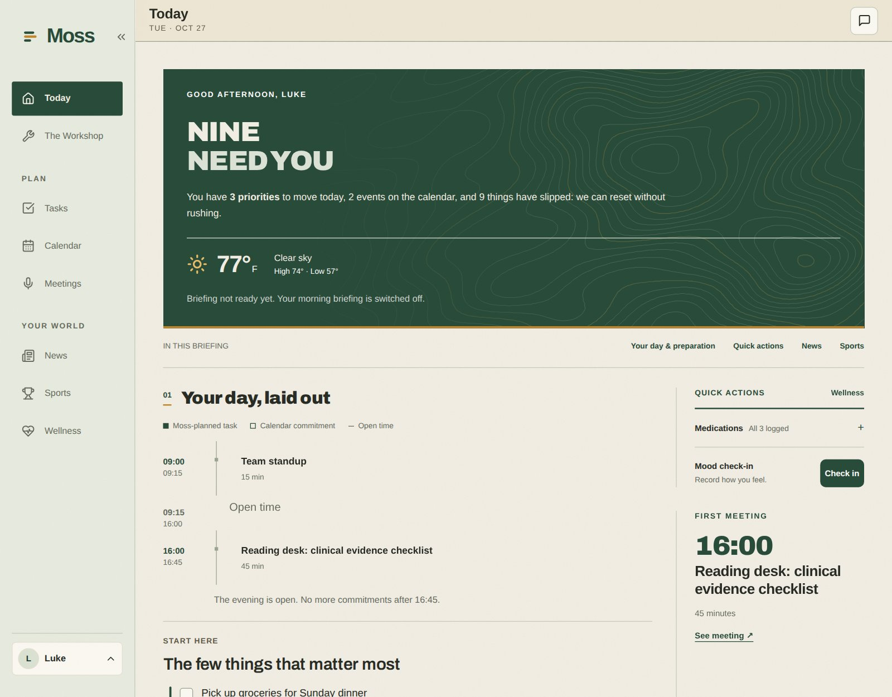
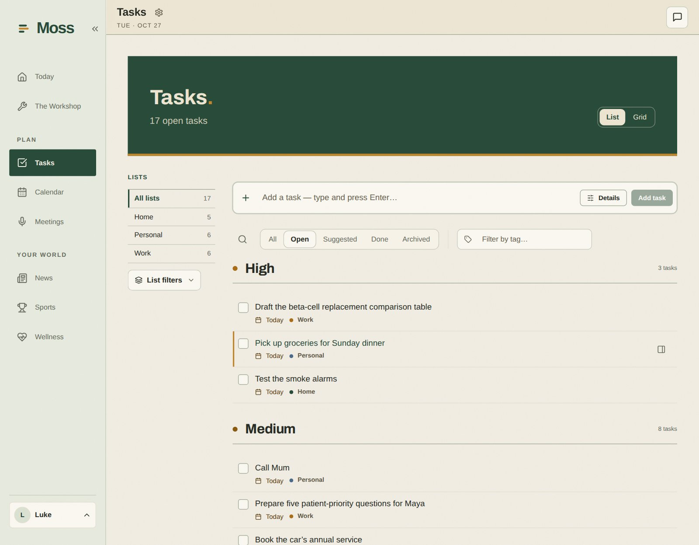
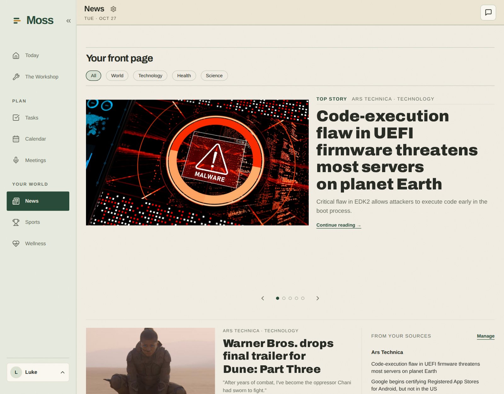
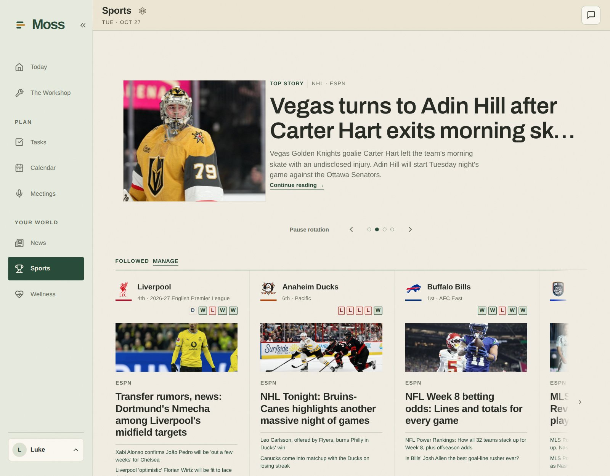
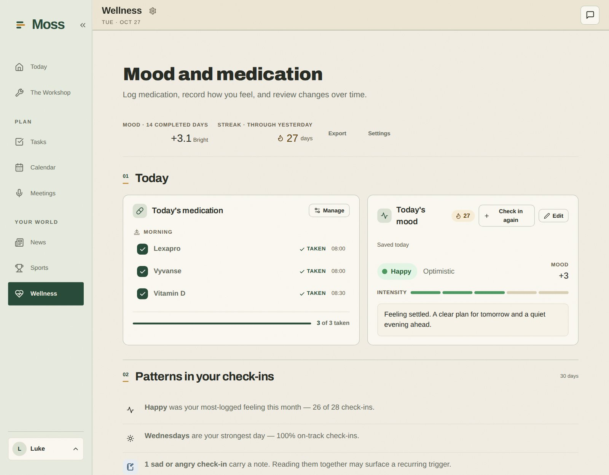

Self-hosted · Alpha
An AI assistant for your everyday life, running on your own hardware.
Moss brings your notes, tasks, calendar, email, and personal context into one place. Talk to it to plan your day, find something you saved, keep track of commitments, or work through a goal.
Moss is in active alpha. Features and installation details are still changing, so expect rough edges.

What you can do with Moss
-
Organize your life
Manage tasks, lists, goals, commitments, and people. Ask Moss to turn a conversation into something you can follow through on.
-
Work with your notes
Search Markdown and Obsidian notes, create and update them, and optionally archive conversations to your vault.
-
Bring in your accounts
Connect email and calendar so your assistant can use messages and upcoming events as context.
-
See your day
Briefings, notifications, and proactive monitoring surface what needs attention. Follow weather, news, and sports.
-
Track your wellbeing
Record check-ins, manage medications, and review wellness trends.
-
Build up context
Memory carries useful information across conversations, so you do not start from scratch each time.
-
Make it your own
Turn modules on or off, install more through Settings, or plan and build a new one with Moss.
Try asking: "What should I focus on today?", "Find my notes about the kitchen renovation," or "Create a task to follow up on this next week."
Your assistant, your providers, your data
Moss stores its database and files on your hardware. Data is private by default and sharing is explicit. Administrators cannot read other people's private data, and connector and AI credentials are encrypted at rest.
You bring your own AI access. Moss works with Claude, Codex, and Gemini sign-in, plus configurable providers for features that need them. Your provider accounts and usage are separate from Moss.
Self-hosted storage does not mean all AI processing is local. When you use a hosted provider, prompts and relevant context go to that provider, and connected services and web tools make their own outside requests.
A look inside
Sample data for a made-up user, Luke, who mixes research work with everyday life.




Install with Docker Compose
You need Docker Engine or Docker Desktop, Docker Compose v2.24 or newer, and a terminal
with curl. The commands use a POSIX shell, so Linux, macOS, or WSL. You do
not need Node.js or the source code.
1. Download the deployment file
mkdir moss
cd moss
curl -fL https://raw.githubusercontent.com/motioneso/moss/main/infra/docker-compose.prod.yml \
-o docker-compose.prod.yml2. Generate your configuration and secrets
JARVIS_IMAGE_TAG=stable POSTGRES_PASSWORD=setup JARVIS_CLI_RUNNER_RPC_SECRET=setup \
docker compose -p moss -f docker-compose.prod.yml --profile setup \
run --rm --no-deps --pull always --user "$(id -u):$(id -g)" setup
This writes env.production.local next to the Compose file. Back it up
somewhere safe, keep it out of Git, and run setup only once.
Before starting, add this line to that file, using the email you will sign up with:
MOSS_RECONCILE_CONFIRM_OWNER_EMAIL=you@example.com3. Start Moss
docker compose -p moss -f docker-compose.prod.yml --env-file env.production.local \
up -d --no-buildOpen http://localhost:1533, create your first account with the email above, and follow the setup wizard to connect your AI provider. The first start takes a few minutes while the database and modules set themselves up.
Need remote access, HTTPS, backups, or upgrade steps? See the deployment guide, the HTTPS guide, and the release notes.